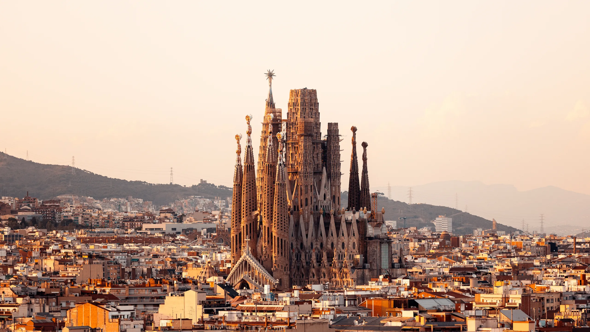
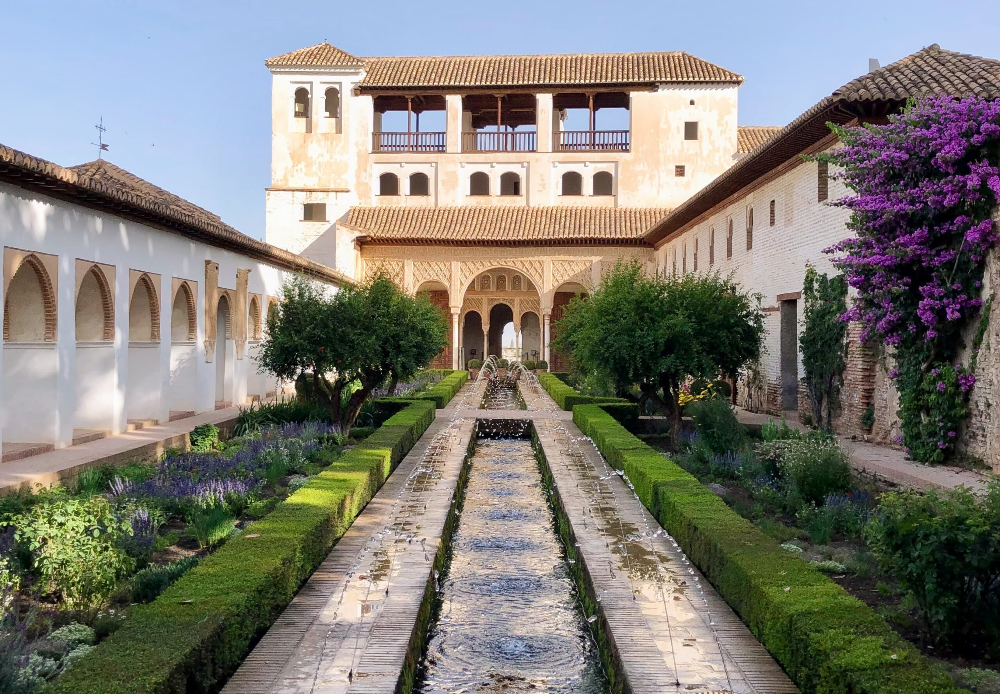
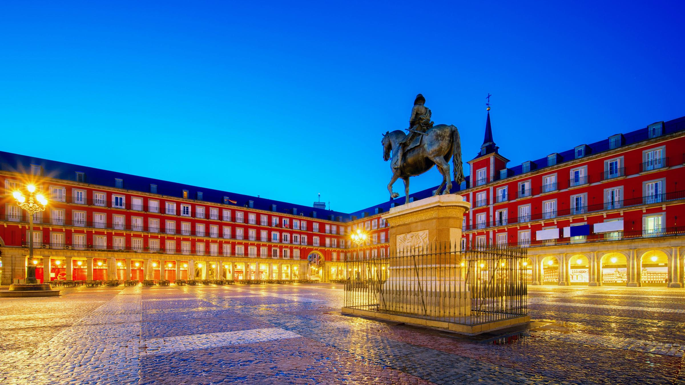
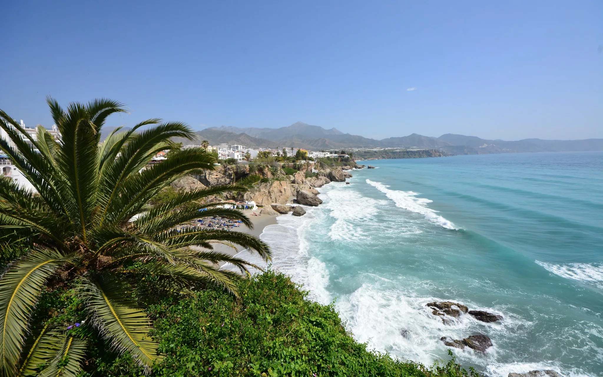

Spanyolország röviden
Általános adatok
- Főváros: Madrid
- Népesség: ~47,4 millió
- Hivatalos nyelv: Spanyol
- Pénznem: Euro (EUR)
- Terület: 505 990 km²
- Kormányforma: Alkotmányos monarchia
Földrajzi elhelyezkedés
Spanyolország a Pyrenei-félszigeten helyezkedik el, Európa délnyugati részén. Az országot nyugatról az Atlanti-óceán, keletről a Földközi-tenger határolja. Franciaországgal és Andorrával északkeleten, Portugáliával nyugaton határos.
Látnivalók

Sagrada Família
Antoni Gaudí mesterműve Barcelona szívében. Ez a világörökség részét képező bazilika 1882 óta épül...

Alhambra
Granada városában található ez a lenyűgöző maur palota- és erődrendszer...

Park Güell
Barcelona egyik legikonikusabb parkja, szintén Gaudí tervezte...

Plaza Mayor
Madrid főtere, amelyet 1617-ben építettek...

Barcelona
Katalónia fővárosa, Gaudi város...

Costa del Sol
A napfénypart - Andalúzia tengerparti része...